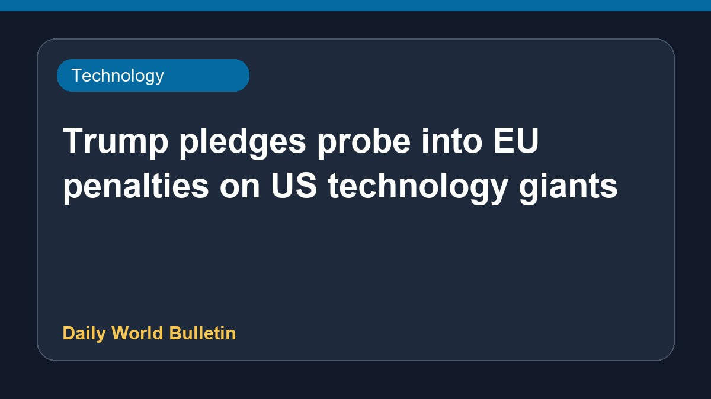

Trump pledges probe into EU penalties on US technology giants

United States President Donald Trump has stated that hefty financial penalties imposed by the European Union on major American technology firms, including Google, Apple, Meta, and Amazon, ought to be completely reversed. Furthermore, he has vowed to launch an official investigation into the European Union regarding these regulatory actions. Details concerning the specific measures or timeline of the proposed US inquiry are currently limited based on the available information.
Original source: BBC Technology
Trump vows to investigate EU over fining of US tech companies ↗
Trump vows to investigate EU over fining of US tech companies ↗